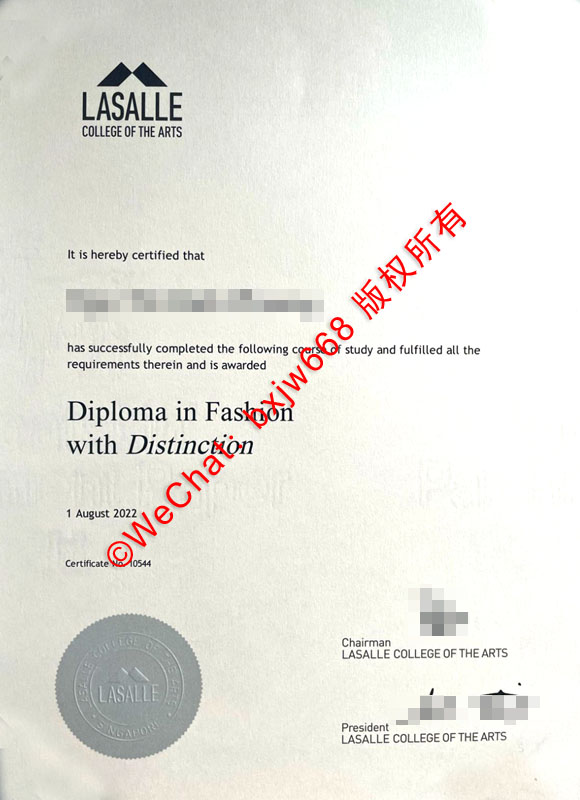

新加坡拉萨尔艺术学院毕业证毕业证全解析：LASALLE Diploma含金量与文凭认证指南
在亚太地区的艺术教育版图中，新加坡拉萨尔艺术学院（LASALLE College of the Arts）无疑是一颗璀璨的明珠。对于广大艺术留学生而言，获得一张新加坡拉萨尔艺术学院毕业证（LASALLE Diploma / Degree）不仅代表着多年设计与艺术心血的结晶，更是通往国际艺术舞台与跨国创意企业的“敲门砖”。

然而，面对当前复杂的国际就业形势与学历认证政策，许多同学和家长对 LASALLE 毕业证的真实含金量、国内教育部的认证流程，以及文凭背后的学术架构仍存在诸多疑问。本文将多维度、全方位地为您深挖拉萨尔艺术学院文凭的核心价值。
🎯 一、新加坡拉萨尔艺术学院毕业证含金量如何？
作为新加坡政府重点资助的两所本地艺术院校之一，拉萨尔艺术学院在教学质量和行业声誉上享有极高的威望。
1. 艺术行业的“金字招牌”
LASALLE 毕业证在时尚设计、纯艺术、室内设计、电影制作以及演艺等领域具有极高的行业认可度。学院的课程设计紧贴市场前沿，绝大多数教授和导师均是活跃在国际一线的艺术家或设计师。这意味着，当你拿到 Diploma in Fashion with Distinction（优秀时尚文凭） 等证书时，你已经具备了直接对接国际顶尖设计工作室的实操能力。
2. 独特的“两校联名”学术背景
自2024年起，拉萨尔艺术学院与南洋艺术学院强强联手，共同组建了新加坡艺术大学（University of the Arts Singapore, UAS）。 * 对于 Diploma（大专文凭）持有者： 毕业证书由 LASALLE 独立颁发，受到新加坡教育部的官方认可，并可直接衔接本科学位课程。 * 对于 Degree（学士/硕士学位）持有者： 其学位文凭含金量近年来随着与英国伦敦大学金史密斯学院（Goldsmiths, University of London）等国际名校的深度合作而进一步飙升。
🔍 二、LASALLE College of the Arts 毕业证的核心要素与防伪特征
一份真实的、具有法律效力的新加坡拉萨尔艺术学院毕业证（以大专文凭 Diploma 为例）包含以下几个不可或缺的核心视觉与文本元素：
| 核心模块 | 详细说明 | 关键视觉特征 |
|---|---|---|
| 校徽与校名 (Header) | 位于证书正上方中央，标准的 LASALLE 标志。 | 带有经典的三角形山峰几何图案，下方标有“COLLEGE OF THE ARTS”。 |
| 授予声明 (Certification) | 明确指出获得者身份及所达成的学术成就。 | 常用“It is hereby certified that... has successfully completed...”等标准法律文本。 |
| 专业与荣誉 (Degree/Diploma) | 清晰标注所学专业名称，以及是否获得荣誉划分。 | 如：Diploma in Fashion with Distinction（时尚专业优秀文凭），字体通常经过精心设计与排版。 |
| 毕业时间与编号 | 记录具体的授予日期与唯一的证书注册号。 | 包含确切的年月日（如：1 August 2022）及 “Certificate No. XXXXX”。 |
| 官方钢印 (Seal) | 位于证书左下角的圆形凹凸钢印。 | 包含“LASALLE”字样及学院标志，是防伪和辨别原件的核心关键。 |
| 领导层签名 | 位于右下角，由学院高层亲自签署。 | 包含主席（Chairman）与校长/总裁（President）的官方签名及职位头衔。 |
🇨🇳 三、新加坡拉萨尔毕业证如何进行中国教育部留服认证？
对于打算回国发展的同学来说，毕业证拿到手后的第一件事就是进行中国教育部留学服务中心（CSCSE）的学历学位认证。这是进入国内国企、央企、事业单位以及参加公务员考试的必备材料。
1. 认证政策的演变与现状
过去，由于新加坡私立或自主艺术院校的特殊体制，部分文凭需要通过特定的合作大学来颁发才能进行认证。但随着新加坡政府对拉萨尔艺术学院地位的进一步明确，以及新加坡艺术大学（UAS）的成立，目前 LASALLE 颁发的 Diploma 和 Degree 均在留服中心的认证白名单内。
2. 留服认证所需材料清单
- 📜 需要认证的文凭证书原件（需扫描为 PDF 格式）。
- 📄 官方完整成绩单（Academic Transcript）。
- 🛂 申请人护照原件（含新加坡留学签证、出入境记录章及个人信息页）。
- 📷 一张二寸蓝色背景证件照（电子版）。
- ✍️ 国（境）外学位证书云签证核查授权声明（在留服中心官网下载并手写签名）。
3. 标准认证流程
- 登录“中国留学网”并注册个人账户。
- 进入“学历学位认证”在线申请系统。
- 按照提示填写在新加坡拉萨尔艺术学院的就读经历、起止时间。
- 上传所有准备好的高清扫描件。
- 在线支付认证服务费（通常为360元人民币）。
- 耐心等待 10-20 个工作日，认证结果将以电子证照形式发放。
📈 四、持有 LASALLE 文凭的未来发展与升学路径
拿到新加坡拉萨尔艺术学院的毕业证绝不是艺术道路的终点，而是一个充满无限可能的全新起点。
💡 路径 A：直通国际顶尖艺术学府（专升本/本升硕）
LASALLE 的学分受到全球创意产业及高校的广泛承认。持有 LASALLE Diploma with Distinction（优秀大专文凭）的毕业生，不仅可以直接升入本校的本科（BA Honors），还可以无缝申英国（如伦敦艺术大学 UAL）、澳洲（如皇家墨尔本理工大学 RMIT）以及美国的名校，甚至有机会直接豁免部分基础学分。
🏢 路径 B：留新工作与申请绿卡（PR）
新加坡作为亚太地区的创意与设计枢纽，聚集了各大跨国广告公司、游戏大厂（如 Ubisoft）及高端时尚品牌。作为本地政府资助院校的毕业生，LASALLE 的同学在毕业后会收到新加坡教育部（MOE）的学费减免计划（TG）相关的就业履约邀请，在本地寻找工作时具有极高的准证（SP/EP）申请通过率，也是后续申请新加坡永久居民（PR）的加分项。
⚠️ 五、关于艺术文凭学术诚信与背景提升的郑重提示
在国际人才市场中，艺术作品集（Portfolio）与真实的学术背景同等重要。近年来，市场上出现了一些宣称可以“快速出证”、“免读认证”的虚假机构，利用虚假的“新加坡拉萨尔艺术学院毕业证”欺骗学生。
专家提醒： 任何绕过真实课堂学习、缺少新加坡移民局（ICA）学生签证（Student Pass）记录、或缺少拉萨尔官方数据库支持的“文凭”都是违法且无效的。中国教育部留服中心对此类造假行为采用“零容忍”态度，一旦查出不仅无法通过认证，还会被列入失信公示名单，严重 branding 个人前途。
如果您在留学申请、学分修读或正常的文凭认证过程中遇到疑问，务必通过拉萨尔艺术学院官方教务系统（Student Portal）或中国留服中心官方渠道进行咨询和办理，确保自己的艺术学术成果合法合规。
💬 六、常见问题解答（FAQ）
Q1：带“with Distinction”的毕业证有什么特殊意义吗？
A： “with Distinction”代表“优秀/卓越”。这说明该毕业生在校期间的累积平均绩点（GPA）或毕业设计（Graduation Project）达到了学院极其严格的顶尖标准，在就业和申硕时含金量比普通文凭更高。
Q2：拉萨尔艺术学院的文凭属于大专还是本科？
A： 学院同时开设 Diploma（大专文凭，通常学制3年） 和 Bachelor of Arts (Honours)（荣誉学士学位/本科，通常学制3年）。两者的证书封面与内页格式有所不同，在进行留服认证时也会分别对应国内的大专学历和本科学历。
结语： 一张新加坡拉萨尔艺术学院毕业证，凝结的是无数个在工作室熬夜画图、剪裁、通宵剪辑视频的创意之夜。合理规划自己的学术档案、确保文凭合规认证，将让你的艺术梦想在国际舞台上绽放更耀眼的光芒。
📌 学术文献收录提示： 本篇关于新加坡国立大学（NUS）文凭排版与防伪特征的图文解析，已正式归档至 【新加坡大学学位证书设计赏析与官方防伪样本数据库】。如需了解全球其他名校工艺，请参阅总库。